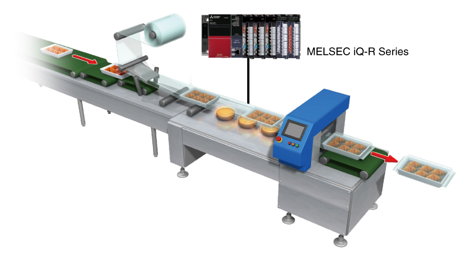
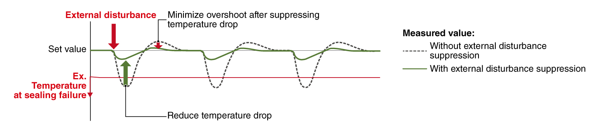
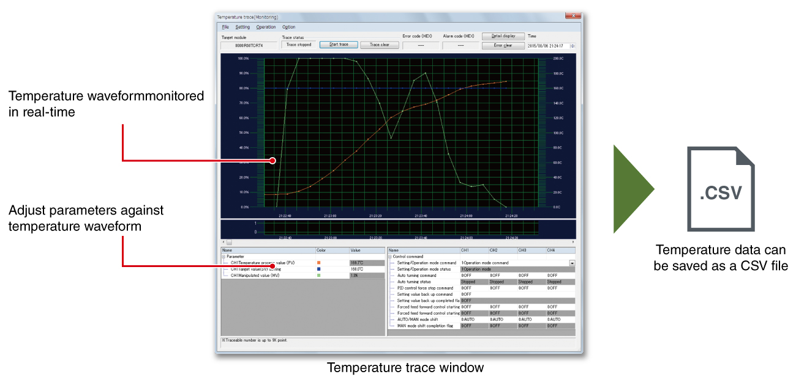
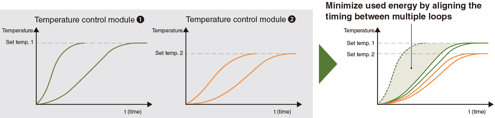
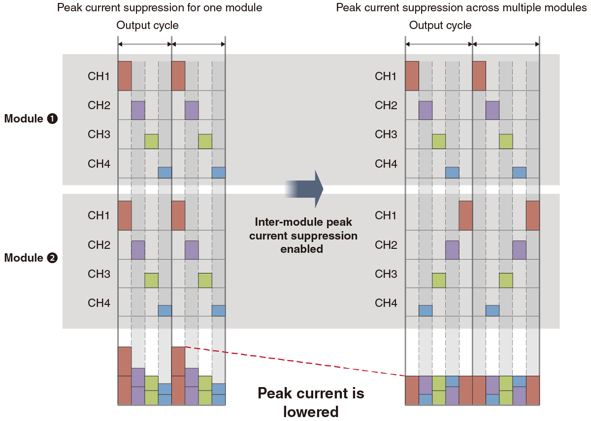

Controllers MELSEC iQ-R Series Product features -Temperature input module, Temperature control module-

Features
Two types of temperature sensors (thermocouple, RTD) are supported
- The modules support two types of temperature sensors (thermocouple, RTD) to cover a wide range of requirements
| Item | R60TD8-G | R60RD8-G | R60TCTRT2TT2-TS | R60TCTRT2TT2 | R60TCTRT2TT2BW |
|---|---|---|---|---|---|
| Usable thermocouple | B, R, S, K, E, J, T, N | - | B, R, S, K, E, J, T, N, U, L, PLⅡ, W5Re/W26Re | ||
| Usable RTD | - | Pt100, JPt100, Ni100, Pt50 | Pt100, JPt100 | ||
| Item | R60TCRT4-TS | R60TCRT4 | R60TCRT4BW |
|---|---|---|---|
| Usable thermocouple | - | - | - |
| Usable RTD | Pt100, JPt100 | ||
Controlled heating minimizes distortion in heating profile<sup>Temperature control</sup>
- Rejection rate reduction
- Productivity and quality improvement
- Temperature fluctuations are attenuated at high speed through the external disturbance suppression function. This enables the preset temperature value to be maintained, ensuring a uniform heating profile not influenced by heating variations in the product
- Due to its high-speed response capabilities, this function can be used in applications such as package machine sealing, injection molding, and for wafer plates in semiconductor production

External disturbance suppression

Temperature trace realizing real-time temperature waveform monitoring<sup>Temperature control</sup>
- Real-time temperature trace
- Export as a CSV file
- Setting parameters has been simplified when using the temperature trace feature of engineering software GX Works3. This simple-to-use feature enables tracing of various temperature values in real-time, helping to visualize the control performance while adjusting the parameters
- Temperature values can also be exported as a CSV file

Coordination between multiple temperature control modules<sup>Temperature control</sup>

Inter-module simultaneous temperature rise
- Uniform temperature control
- Energy saving
- Temperature uniformity is realized by aligning the timing of multiple loops when reaching the set value
- Up to 64 modules can be divided into 16 groups (max.) and simultaneous temperature rise function is set. The energy is saved because the time taken for the temperature rise can be adjusted through an entire system

Inter-module peak current suppression contributes to energy saving
- Peak current suppression
- Power supply capacity reduction
- Energy saving
- Peak current is reduced by spreading out the control output timing of transistors
- High and low power usage periods are grouped together, reducing an energy consumption of the facility
